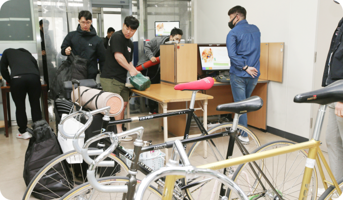
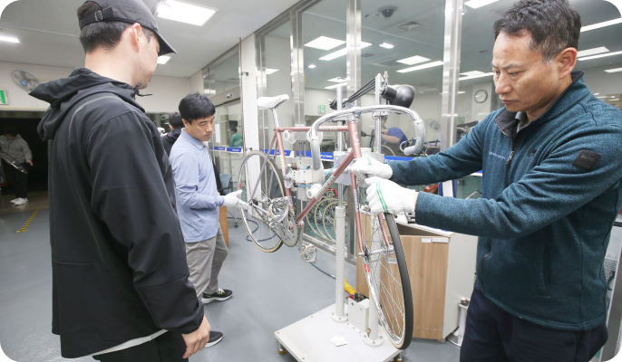
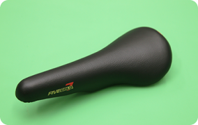

<!-- Header -->
<%- include('../_ejs_eng/top.ejs', {
	title: "KCYCLE Racing",
    url: "../../"
}) %>

<!-- 레이아웃 -->
<div class="lytLayout">
    <div class="layoutArea">

        <!-- 상단영역 -->
        <div class="layoutTop">
            <!-- Top -->
            <%- include('../_ejs_eng/header.ejs', {
                url: "../../"
            }) %>
        </div>
        <!-- //상단영역 -->

        <!-- 중단영역 -->
        <div class="layoutContainer" id="container">

            <!-- 서브 콘텐츠 영역 -->
            <div class="layoutSubCont">

                <!-- 서브 컨텐츠 내용이 들어오는 영역-->
                <!-- 서브 탑 (타이틀) --> <!-- 20250104 class : subTitle 텍스트 수정 -->
                <%- include('../_ejs_eng/sub_top.ejs', {
                    location: ['K-Cycling','Cycle Racing Guide','Build Track Cycling Knowledge'],
                    subTitle: 'Track Bicycle Information',
                    subText: 'Tracking bicycles? <b>Put your curiosities to rest!</b> <br/>Let&rsquo;s learn about tracking bicycles.',
                    url: "../../",
                    visualClass : "bg02",
                }) %>

                <div class="layoutContArea">
                    <div class="cptSection">
                        <div class="sectArea">
                            <div class="comTitH2">
                                <h2>Bicycle Certification Inspection</h2>
                            </div>

                            <div class="comBasicTxt">
                                <p class="txt">The bicycle certification inspection refers to the examination conducted when a rider enters the venue the day before the competition. The types of inspections include, in sequence, <em>torque inspection, visual inspection, and tightening and measurement inspections</em>. Only bicycles that pass this certification process are eligible to participate in the race.</p>
                            </div>

                            <div class="comTitH3">
                                <h3>Pre-Race Day Bicycle Certification Inspection</h3>
                            </div>
                            
                            <div class="comBasicTxt space">
                                <p class="txt">The bicycle certification inspection refers to the examination conducted when a rider enters the venue the day before the competition. The types of inspections include, in sequence, <em>torque inspection, visual inspection, and tightening and measurement inspections</em>. Only bicycles that pass this certification process are eligible to participate in the race.</p>
                            </div>

                            <div class="comImgWrap col3">
                                <div class="imgGroup">
                                    <div class="imgArea"></div>
                                    <div class="imgArea"></div>
                                    <div class="imgArea"></div>
                                </div>
                            </div>

                            <div class="comTitH3">
                                <h3>Race Day Bicycle Certification Inspection</h3>
                            </div>
                            
                            <div class="comBasicTxt space">
                                <p class="txt">On race days (Friday, Saturday, Sunday), two levels of inspections are conducted. The first is a <em>pre-entry inspection</em>, conducted two hours before the start of the first race. The second is a <em>pre-start inspection</em> conducted right before the start of the race.</p>
                            </div>
                            
                            <div class="comImgWrap col3">
                                <div class="imgGroup">
                                    <div class="imgArea"></div>
                                    <div class="imgArea"></div>
                                </div>
                            </div>
                        </div>
                    </div>

                    <div class="cptSection">
                        <div class="sectArea">
                            <div class="comTitH2">
                                <h2>Structure of Tracking Bicycles</h2>
                            </div>

                            <div class="comBasicTxt">
                                <p class="txt">A tracking bicycle, unlike a regular bicycle, is designed with a fixed gear and a high gear ratio, optimised to maintain high speeds during races. <br/> They are also equipped with various safety features to prevent accidents, reflecting the unique characteristics of cycling racing.</p>
                            </div>
                        </div>
                    </div>

                    <div class="cptImgPopup">
                        <div class="imgArea">
                            <div class="comTitH3">
                                <h3>Exploded View of a Tracking Bicycle and Its Parts</h3>
                            </div><!-- 부품 팝업 업데이트 필요 --><div class="imgBox"><!-- 20241107 삭제 --> <!-- <div class="popInfo">
                                    <p class="info">부품을 클릭하면 부품명칭과 상세화면을 확인할 수 있습니다.</p>
                                </div> --> <!-- //20241107 삭제 --><div class="imgWrap"></div><!-- 20241107 삭제 --> <!-- <ul class="infoGroup">
                                    <li class="numbItem"></li>
                                </ul> --> <!-- //20241107 삭제 --></div>

                            <div class="comImgBox narrow mNoneB">
                                <div class="imgWrap">
                                    <ul class="col4">
                                        <li class="item">
                                            <p class="imgTxt">01. Tyres</p></li>
                                        <li class="item">
                                            <p class="imgTxt">02. Hand Grip</p></li>
                                        <li class="item">
                                            <p class="imgTxt">03. Frame and Fork</p></li>
                                        <li class="item">
                                            <p class="imgTxt">04. Small Gear</p></li>
                                        <li class="item">
                                            <p class="imgTxt">05. Head Parts</p></li>
                                        <li class="item">
                                            <p class="imgTxt">06. Chain</p></li>
                                        <li class="item">
                                            <p class="imgTxt">07. Toe Clips</p></li>
                                        <li class="item">
                                            <p class="imgTxt">08. Saddle</p></li>
                                        <li class="item">
                                            <p class="imgTxt">09. Large Gear</p></li>
                                        <li class="item">
                                            <p class="imgTxt">10. Gear Crank</p></li>
                                        <li class="item">
                                            <p class="imgTxt">11. Hanger Parts</p></li>
                                        <li class="item">
                                            <p class="imgTxt">12. Clip Band</p></li>
                                        <li class="item">
                                            <p class="imgTxt">13. Saddle Post</p></li>
                                        <li class="item">
                                            <p class="imgTxt">14. Rims</p></li>
                                        <li class="item">
                                            <p class="imgTxt">15. Pedals</p></li>
                                        <li class="item">
                                            <p class="imgTxt">16. Handlebar</p></li>
                                        <li class="item">
                                            <p class="imgTxt">17. Chain Adjuster</p></li>
                                        <li class="item">
                                            <p class="imgTxt">18. Spokes</p></li>
                                        <li class="item">
                                            <p class="imgTxt">19. Hub</p></li>
                                        <li class="item">
                                            <p class="imgTxt">20. Handle Stem</p></li>
                                    </ul>
                                </div>
                            </div>

                            <div class="comTitH3">
                                <h3>Features of Tracking Bicycles</h3>
                            </div>
                            
                            <div class="comBasicTxt space">
                                <p class="txt">The most distinctive feature of a tracking bicycle is that, unlike a regular bicycle, it does not have brakes, and the rotation direction of the pedals is the same as that of the rear wheel. <br/> In a standard bicycle, the rear gear (small gear) is equipped with a mechanism called a <em>freewheel</em>. When the drivetrain rotates, power is transmitted to the rear wheel, moving the bicycle forward. Even if the pedals are stopped or pedalled in reverse, the rear wheel continues its motion in the same direction. However, a cycling (track) bicycle uses a fixed gear instead of a freewheel, meaning that if reverse pedalling is applied, the rear wheel will also rotate in the same direction. Due to this structural principle, when reducing speed or coming to a stop while riding, the cyclist must apply force in the reverse direction.</p>
                            </div>
                            
                            <div class="comTitH3">
                                <h3>Bicycle Weight and Dimensions</h3>
                            </div>
                            
                            <div class="comBasicTxt space">
                                <p class="txt">The bicycles currently used in cycling races weigh approximately 7 to 9 kilograms, and their length, including the tyres, must not exceed 2 metres. <br/> Additionally, the diameter of the front and rear wheels, including the tyres, must be between 67 and 69 centimetres. The price of each bicycle is around 4 to 4.5 million KRW when purchased as a complete unit.</p>
                            </div>
                        </div>
                    </div>

                    <div class="cptEtcInfo">
                        <div class="infoBox">
                            <dl class="info">
                                <dt><em class="tit">Why do cyclists keep riding even after crossing the finish line?</em> <span class="subTit">Curiosities about Cycling</span></dt>
                                <dd>
                                    <div class="infoList">
                                        <ul class="listGroup">
                                            <li class="item">The reason why riders continue cycling for a certain distance even after crossing the finish line lies in the structure of the tracking bicycle.<br/>Unlike regular bicycles, cycling bicycles do not have brakes, so riders must either keep pedalling or pedal in reverse to create friction in order to adjust their speed.</li>
                                        </ul>
                                    </div> 
                                </dd>
                            </dl>
                        </div>
                    </div> 
                </div>
                
                <!-- //서브 컨텐츠 내용이 들어오는 영역-->
                
            </div>
            <!-- //서브 콘텐츠 영역 -->

        </div>
        <!-- //중단영역 -->

        <!-- 하단영역 -->
        <div class="layoutFooter">
            <!-- Footer -->
            <%- include('../_ejs_eng/footer.ejs', {
                url: "../../"
            }) %>
        </div>
        <!-- //하단영역 -->

    </div>
</div>


<!-- Bottom -->
<%- include('../_ejs_eng/bottom.ejs', { }) %>